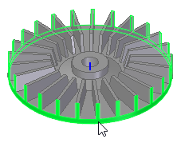
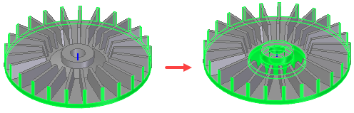

Radiate command bar
- Radiate Faces step
-
Specifies the faces to radiate.

- Move Faces step
-
Selects the faces to move with the radiating faces.
- Finish/Cancel
-
This button changes function as you move through the feature construction process. The Finish button constructs the feature using input provided in the other steps. After you construct the feature, you can edit it by re-selecting the appropriate step on the command bar. The Cancel button discards any input and exits the command.
- Include All Coaxial Faces
-
Selects all faces that are coaxial to the first face selected.

- Selection Type
-
Specifies the method of selection of faces to move.
-
Single—Selects a single face to move.
-
Chain—Selects an endpoint connected set of faces by selecting one of the faces in the chain.
-
Feature—Selects a feature to move.
-
- Accept
-
Accepts the current input.
- Deselect
-
Deselects the current input.
How do I
Construct a revolved extrusion: base featureConstruct a revolved extrusion or cutout: subsequent features
Edit the radius of a face
Move a group of faces radially along a direction
Learn more
Constructing revolved synchronous featuresConstructing revolved features using the Select tool
Look up more details
Revolve commandRevolve command bar
Revolved Protrusion command bar
Radiate command